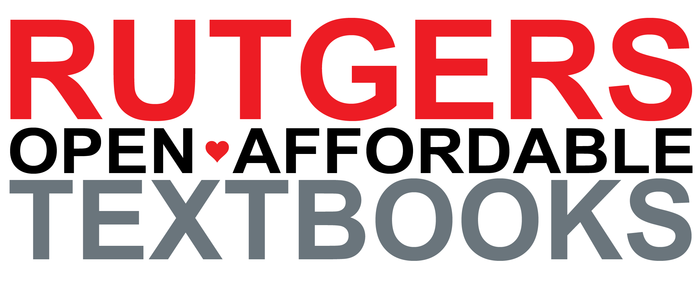

Spring'23: Introduction to Discrete Structures I (CS 205)Wednesday: 17:40-19:00 HILL building - Room 114 Instructor: Karthik C. S. (Office hours on Zoom: Tuesday, 20:00-21:00; link available on Canvas) Recitations: Evgenia Chroni, Sharath Punna, Prince Rawal, Adarsh Srinivasan, Hengyi Wang, Gagan Gowda Madaiah. Topics and ScheduleThe tentative syllabus can be found here.
GradingAs mentioned in the syllabus, the grading is as described in here. In particular, there is no curve based grading!Your grade is computed out of 1000 points or 100%. You can accumulate at most 300 points (30%) from homework and at most 200 points (20%) from quizzes. The midterm is assigned 250 points (25%) and final exam is assigned 250 points (25%). To compute your grade sum up all the homework, quizzes, midterm, and final exam. There is no curve: you must earn a minimum of 90% of the total points for an A (900 points), 85% for a B+ (850 points), 80% for a B (800 points), 75% for a C+ (750 points), 70% for a C (700 points), and 60% for a D (600 points). You will fail the course if you earn less than 60% points (600 points). The cutoffs are strictly followed for each letter grade. A computed grade of 74.99% is a C not a C+. There are no other extra credits activities for the course. No exceptions. There will be 4 homeworks each assigned 75 points that you may accumulate. There will be weekly quizzes (about 11 or 12 quizzes throughout the course). Each quiz is assigned 20 points (you may accumulate at most 200 points through quizzes; if you obtain more than 200 points then it will be capped to exactly 200 points). All quizzes will be released on Monday nights on Canvas and you have until the Sunday night on the same week to complete the quiz. If you are familiar with the material covered in class, then you should be able to complete each quiz in well under 10 minutes. That said you will be allowed 20 minutes to complete the quiz (once you begin). Open and Affordable Textbooks ProgramThis course has received an Open and Affordable Textbooks Program Award from the Rutgers University Libraries. The OAT Program supports textbook affordability at Rutgers by encouraging courses to adopt educational materials that are freely available, available at a low cost (compared to similar courses), or part of the Rutgers University Libraries' electronic collections, and thereby free of charge to Rutgers University students. As a student in this course, you will be asked to provide feedback on this initiative at the end of the semester. |